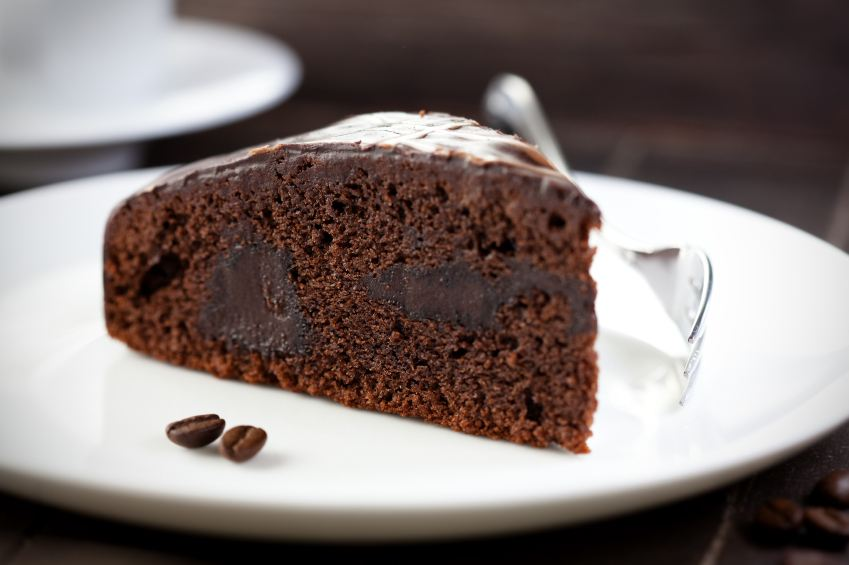

<ion-view view-title="Gâteau au chocolat">

    <ion-content class="padding">


        <h1>Gâteau au chocolat</h1>

        

        <p class="gras">Temps de préparation : 10 minutes</p>

        <p class="gras">Temps de cuisson : 30 minutes</p>

        <p class="gras">Ingrédients (pour 6 personnes) :</p>

        <ul>
            <li>- 200 g de chocolat à pâtisser noir</li>
            <li>- 100 g de beurre + une noix pour le moule</li>
            <li>- 3 oeufs</li>
            <li>- 50 g de farine</li>
            <li>- 100 g de sucre en poudre</li>
        </ul><br>

        <p class="gras">Préparation de la recette :</p>

        <p>Préchauffez votre four Th.6 (180°C).</p>

        <p>Dans une casserole, faites fondre le chocolat et le beurre coupé en morceaux à feu très doux.</p>

        <p>Dans un saladier, ajoutez le sucre, les oeufs, la farine. Mélangez. Ajoutez le mélange chocolat/beurre.</p>

        <p>Mélangez bien.</p>

        <p>Beurrez et farinez votre moule et versez la pâte à gâteau.</p>

        <p>Faites cuire au four environ 20 minutes (25 minutes dans un moule en Pyrex). A la sortie du four le gâteau ne paraît pas assez cuit. C'est normal, laissez-le refroidir puis démoulez- le.</p>


    </ion-content>

</ion-view>